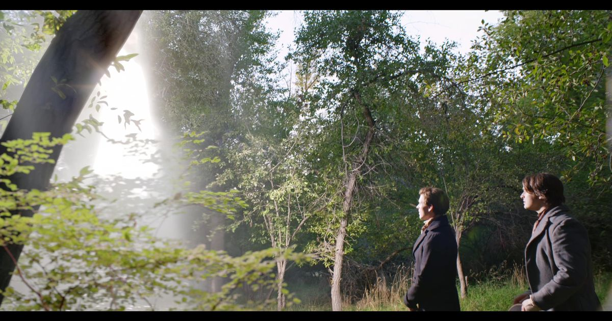
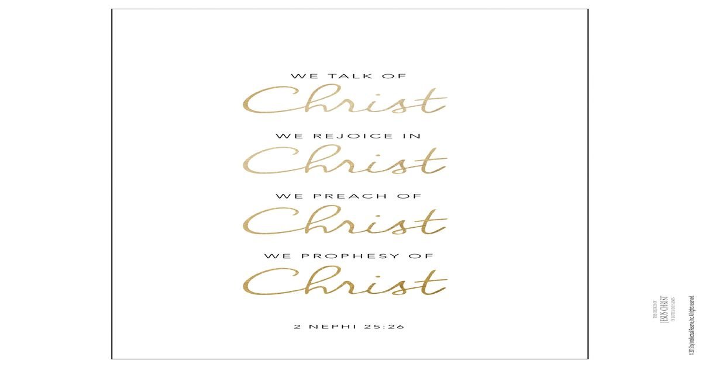

Church video
Days of Harmony
Watch Oliver Cowdery’s experience as a scribe, then return to the questions and reassurance in Doctrine and Covenants 6.
The Church of Jesus Christ of Latter-day Saints
Signature Scripture Study
“Look unto me in every thought; doubt not, fear not.” Doctrine and Covenants 6:36
Look unto Christ. Remember Christ. Talk of Christ. Rejoice in Christ. Act through Christ.
Doctrine and Covenants 6:36 is not an isolated slogan. In context, the Lord directs Joseph Smith and Oliver Cowdery away from fear and toward Himself. The same Christ-centered movement appears across scripture: Paul tells disciples to rejoice in the Lord and rejoice in Christ Jesus, while Nephi declares, “we talk of Christ, we rejoice in Christ.” Together these passages form a study pattern for focusChrist: attention, remembrance, discipleship, and joy centered in the Savior.
The revelation in context
Oliver Cowdery arrived at Joseph and Emma Smith's home in Harmony, Pennsylvania, on April 5, 1829. He began writing as Joseph's scribe on April 7. Before their meeting, Oliver had boarded with Joseph's parents and prayed about what he learned of the plates. The Church's historical account describes a private experience of peace that he had not shared. Doctrine and Covenants 6 recalled that experience while addressing his participation in the work.
Earlier in the revelation, the Lord reminds Oliver of an experience of peace: “Did I not speak peace to your mind concerning the matter?” (D&C 6:23). That reminder gives verse 36 added depth. Looking to Christ includes remembering light already received rather than allowing present fear to erase it.

Church video
Watch Oliver Cowdery’s experience as a scribe, then return to the questions and reassurance in Doctrine and Covenants 6.
The Church of Jesus Christ of Latter-day Saints
Study lesson
Explore the lesson’s questions about doubts and fears, and read the Savior’s invitation in its scriptural setting.
The Church of Jesus Christ of Latter-day Saints
Read the verses as a sequence
Read the complete passage first. The reflections below follow its movement from Christ's presence to faithful action and His promise of eternal life.
Jesus recalls His promise to disciples gathered in His name and applies it to Joseph and Oliver. Their work begins with His presence. Before asking how strong their faith feels, notice who speaks and where He says He is.
The Lord joins courage to goodness through the image of sowing and reaping. Consider a good action fear has made difficult: offering help, telling the truth, or making amends. This is an invitation to act faithfully, not a timetable for a particular result.
The verse acknowledges opposition rather than promising its absence. Christ's rock is the foundation of the reassurance. Ask what supports your choices when approval, comfort, or circumstances change.
Christ's words of non-condemnation accompany a call to leave sin and perform the commanded work soberly. Mercy and responsibility belong together. A useful reflection is: what can I turn from, and what work can I return to with greater care?
The invitation directs attention to a person, Jesus Christ. Read it with the verses on either side: His presence, goodness, mercy, and sacrifice give trust its substance. Looking to Him can shape what you choose even before every question is settled.
The final verse directs attention to the Savior's wounded side, hands, and feet, then invites faithfulness and obedience. The Church's student manual says it is not known whether verses 32 and 37 refer to a literal or figurative experience. The text can be studied without deciding whether a visitation occurred to study what His words teach.
The Seminary lesson pairs these verses and invites students to consider His Atonement and Resurrection. Compare 3 Nephi 11:10-17: the risen Lord identifies Himself and invites the people to feel His wounds, becoming witnesses for themselves.
Then read Alma 7:11-13. Alma teaches of Christ taking upon Himself suffering, infirmities, death, and sins, and knowing how to help His people. Together, these passages direct our attention to both His power to redeem and His knowledge of human suffering. The wounds invite trust in the Savior who suffered and lives.
Reflect: When you pray about pain, guilt, or fear, how might remembering the living Redeemer change what you ask Him for? Give yourself room to seek forgiveness, strength, or companionship without demanding that grief disappear.
Church video
Watch the account of Peter and the Savior on the water. Read Matthew 14:22-33 and notice Peter’s appeal for help.
The Church of Jesus Christ of Latter-day Saints

Church video
Listen for ways to turn attention toward the Savior. Choose one invitation to consider alongside D&C 6:36.
The Church of Jesus Christ of Latter-day Saints
Bring the scripture into the day
You can begin with the question you are carrying. These reflections are focusChrist study applications, offered alongside the scriptures and Church teachings linked here.
In Seek Christ in Every Thought, Elder Ulisses Soares describes bringing our minds and desires into harmony with Christ and choosing what is good each day. He also acknowledges that unwelcome thoughts can arise despite sincere effort. His teaching concerns how we respond and what we cultivate.
Consider ordinary moments: preparing for work, listening to someone, or deciding how to answer a difficult message. A personal application is to pause and ask, “What would honesty, patience, and love require here?” Returning your attention to Christ can become a repeated practice.
Read Matthew 14:27-33 all the way through. Peter becomes afraid and begins to sink, but he also calls for help. Jesus immediately reaches for him. The account includes rescue as well as correction.
As a study application, distinguish a question you need to investigate from a fear that is preventing a good action. You can seek evidence, ask for help, and keep turning toward Christ. Do not use this passage to measure another person's faith by how calm they appear.
Oliver's remembered peace concerned a particular question. Remembering it did not make every later question identical. The historical account continues through his desire to translate, his unsuccessful attempt, further counsel, and his return to serving as scribe.
Try writing two short notes: what you have reason to trust, and what remains unresolved. Preserve earlier light without treating it as a prediction about a new outcome. Hebrews 12:1-3 places looking to Jesus within patient endurance. The next step may be continued study, a conversation, or a responsibility you can fulfill while waiting.
In Jesus Christ Is the Strength of Youth, Elder Dieter F. Uchtdorf explains that gospel principles guide decisions without providing a separate yes or no for every possible choice. Christ remains the guide, and the person still chooses.
For a decision before you, identify the relevant teaching, gather needed information, consider who is affected, and pray. Distinguish what is clearly right from a preference about an uncertain outcome. Choose a responsible next step and remain willing to learn. The video below can deepen this reflection; Prayer and Personal Revelation continues the study.
Alma 37:36-37 brings this attention into an ordinary day: actions, thoughts, affections, counsel with God, rest at night, and gratitude in the morning. Choose one of those moments as a reminder to turn toward Him.
A practical way to study
Read D&C 6:32-37 and mark every statement about Jesus Christ. Ask what the passage teaches about who He is and what He promises.
Read D&C 6:22-23. Record one experience of peace, truth, help, or spiritual clarity you do not want fear to erase.
Read 2 Nephi 25:26. Share one thing you are learning about Christ with someone willing to listen, or write it for yourself. Speak honestly about what you understand and what you are still seeking.
Read Philippians 4:4 and 2 Nephi 25:26. Write one reason you rejoice in Christ Himself, not merely in a hoped-for outcome.
Choose one faithful action consistent with Christ's teachings. Continue praying and studying without forcing certainty that has not come.
What thought most often pulls my attention away from Christ? What truth in D&C 6:32-37 answers it? What has Christ already done that gives me reason to rejoice? What good action am I postponing because of fear? What would one faithful next step look like today?
2027 Church theme connection
The Church's 2027 youth theme is “Rejoice in Christ.” Church leaders have connected the theme with Philippians 4:4, and the same phrase is being used for the 2027 Salt Lake Temple Celebration. That creates a natural companion to D&C 6:36: the Savior we are invited to look toward is also the Savior in whom disciples rejoice.
“Rejoice in the Lord alway.” Read the surrounding chapter and notice how rejoicing is linked with prayer, gratitude, peace, disciplined thought, and strength through Christ.
Paul says believers “rejoice in Christ Jesus” and place no confidence in the flesh. Compare that with D&C 6:36: confidence shifts away from self and toward Christ.
Nephi explains why he writes and teaches so openly of the Savior: “we talk of Christ, we rejoice in Christ, we preach of Christ, we prophesy of Christ.”
Nephi explains that he includes Isaiah so readers can lift up their hearts and rejoice. Prophecy, covenant, gathering, and the Messiah all become reasons to rejoice in Christ.
Philippians 4:4-13 develops the connection. Paul moves from rejoicing to prayer with thanksgiving, then to peace guarding hearts and minds through Christ. He names things worthy of attention and urges disciples to practice what they have learned. His testimony of strength follows his account of both abundance and hunger. Joy in Christ does not depend on calling every circumstance pleasant.
In Philippians 3:7-14, Paul places knowing Christ above his former advantages and continues pressing forward. In 2 Nephi 11:4-8, Nephi delights in the Redeemer, God's covenants, grace, and plan of deliverance. These are reasons for rejoicing rooted in who Christ is and what God provides.
Read the purpose at the end of 2 Nephi 25:23-26. Nephi's speaking, writing, and rejoicing help his children know where to look for forgiveness. Talking of Christ is therefore part of helping someone else turn toward Him. It can be a quiet conversation, a shared scripture, or an honest account of something you are learning.
Reflect: What about the Savior gives you reason for gratitude today? How could you speak of that without minimizing someone else's pain?
These scriptures create a simple Focus pattern: look unto Christ, remember Christ, talk of Christ, rejoice in Christ, and act through Christ. D&C 6:36 gives the direction of our attention. Philippians and 2 Nephi show what can grow from that attention: confidence in Him, peace, gratitude, testimony, and joy.
Study lesson
Study 2 Nephi 20-25 with Come, Follow Me. Look for what Nephi wants the next generation to know about the Savior.
The Church of Jesus Christ of Latter-day Saints
Study lesson
The 2027 Come, Follow Me lesson on Philippians and Colossians offers a companion study of peace, endurance, and strength through Christ.
Preview artwork: Light of the World, by Walter Rane.
The Church of Jesus Christ of Latter-day Saints

Scripture picture quote
Open the Church’s picture quote, then read the complete verse. Notice how speaking of Christ points the next generation toward Him.
The Church of Jesus Christ of Latter-day Saints

Church announcement
Read the Church’s announcement and invitation to participate. Connect the celebration’s theme with your study of Philippians 4.
The Church of Jesus Christ of Latter-day Saints
Trace the theme through scripture
Peter walks toward Jesus, then begins to sink as fear overtakes his attention. Compare his experience with D&C 6:36.
Israel is invited to look and live. Scripture repeatedly connects faithful looking with trust in God's provided deliverance.
Alma teaches that thoughts should be directed unto the Lord and that disciples should counsel with Him in all their doings.
Disciples run with patience while “looking unto Jesus.” Compare the language of attention, endurance, and joy.
Turn attention into discipleship
Let each message lead back to the Savior’s words. Choose one question to carry into the seven-day study below.
Church video
Hear Elder Dieter F. Uchtdorf’s teaching about choosing with Jesus Christ as your guide. What makes a decision Christ-centered?
The Church of Jesus Christ of Latter-day Saints
Church video
A message with President Jeffrey R. Holland and youth leaders. Consider how trust in Christ can shape your next faithful step.
The Church of Jesus Christ of Latter-day Saints
Resource collection
Visit the official youth resource hub for the theme and available materials. This is a growing collection, not a single video.
The Church of Jesus Christ of Latter-day Saints
Church music video
Listen to the 2025 Youth Music Festival performance, then return to Doctrine and Covenants 6:36 with one thought to reflect on.
The Church of Jesus Christ of Latter-day Saints
A seven-day Christ-centered study
Verify and continue
The “636” in @theRisen636 points to Doctrine and Covenants 6:36. The expanded study gives that name a fuller scriptural frame: look unto Christ, speak of Christ, rejoice in Christ, and help others turn toward Him.
Study prayer, personal revelation, discernment, and faithful decisions while a question remains open.
Explore faith in Jesus Christ without measuring faith by how quickly circumstances improve.
Continue with Psalm 46 and a visual study about quiet attention, trust, and agency.